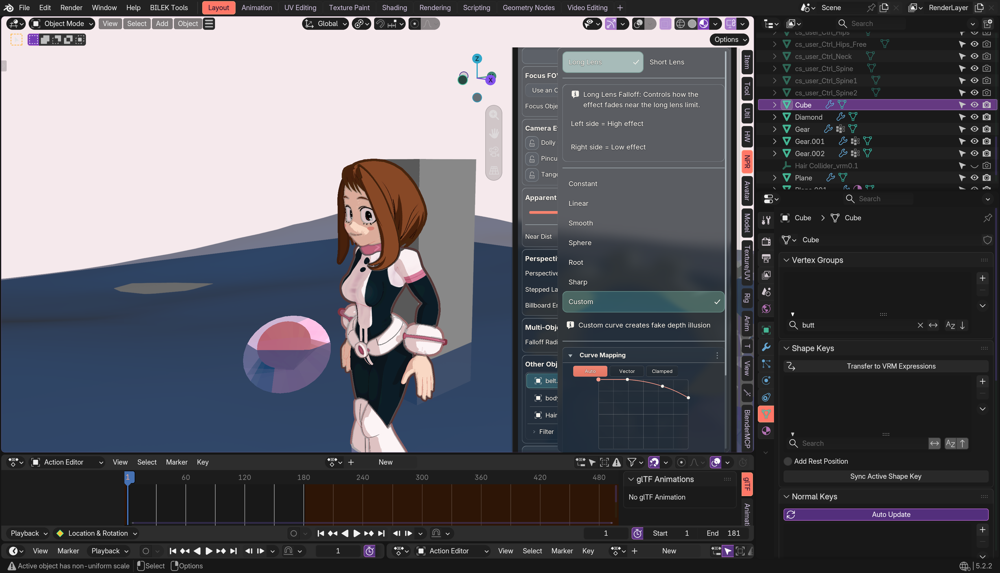
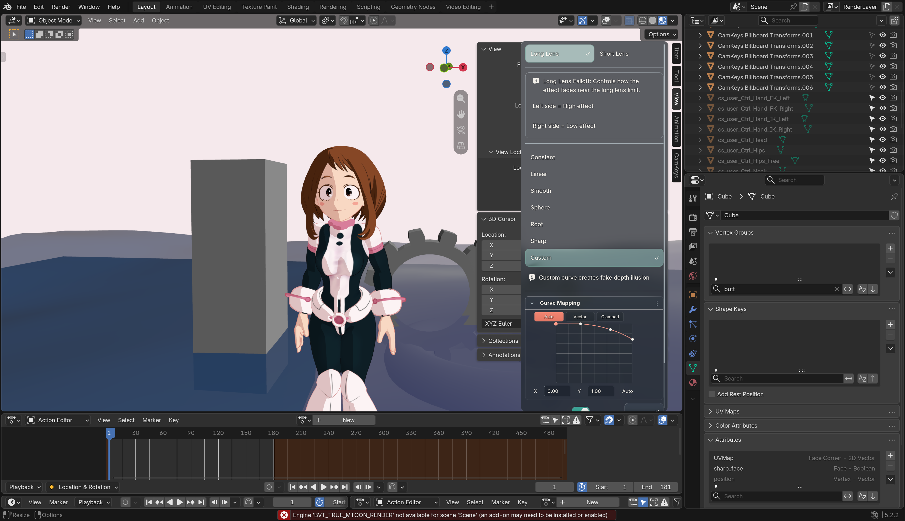
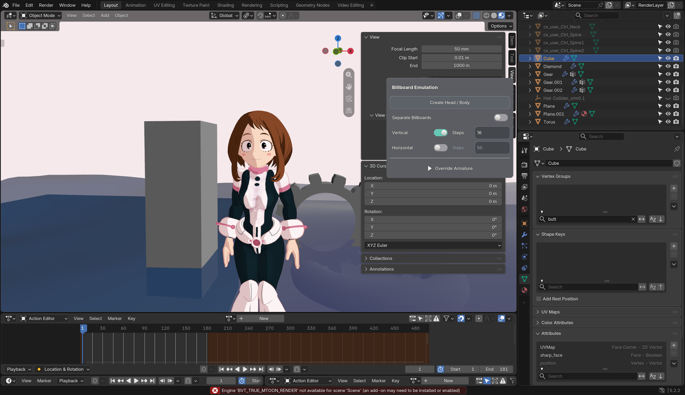
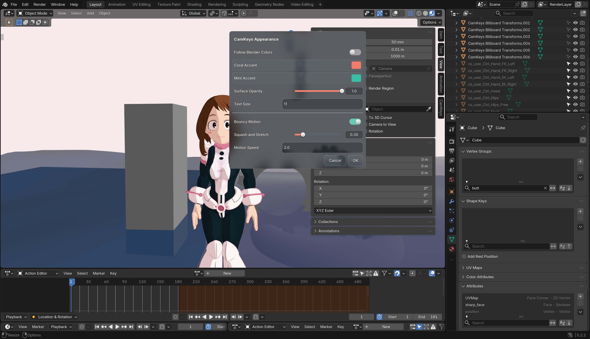

Actual Blender captures. Shared popup presentation now runs after the sidebar is composited. The popover borrows the completed viewport texture, with shared blur/refraction, instead of covering it with another child-canvas background.
400 unit tests; 11 Uraraka popup cases passed on both 5.1.2 and 5.2.2. Direct dialogs, menus, pie menus, search, editing, undo, right-click and dismissal regressions passed. No owned Blender test window became frontmost. Your dirty live scene was not saved.
Detailed evidence and limits · Feature overview

The saved scene uses an unavailable BVT renderer in the disposable profile; these captures use Blender's resulting viewport. They prove custom popup composition, not BVT scene rendering fidelity.


